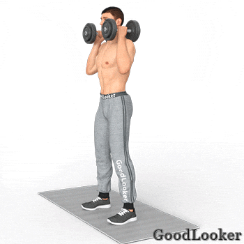

Известно, что тренировку лучше начинать с самых сложных упражнений, находясь на максимуме своих сил. Первый день мы рекомендуем начать с приседаний и отжиманий, которые задействуют практически все мышечные группы тела. В конце сделайте один из вариантов тренинга на пресс, чтобы укрепить кор и живот.
Важно! Не пренебрегайте разминочным подходом, каждое упражнение сначала сделайте с минимальным весом. Этот прием поможет вам двигаться увереннее и техничнее с более тяжелыми гантелями.
Работающие мышцы: бицепсы, квадрицепсы и приводящие бедер, средние и большие ягодичные мышцы, пресс, мышцы предплечий, бицепсы.
Как выполнять:
В каждую руку возьмите по гантеле и встаньте прямо, ноги на ширине плеч. Согните руки в локтях, положив гантели на плечи. Опуститесь в приседание, слегка прогибаясь в пояснице, чтобы не сгибать спину. Следите, чтобы колени находились на одной линии с носками, для этого не приседайте слишком низко – бедра должны быть параллельны полу.
Если трудно держать равновесие, то поставьте ноги немного шире. Зафиксируйте руки в одном положении, это тоже поможет вам держать баланс и сконцентрироваться на приседаниях – лучшем силовом упражнении для ног в домашних условиях, которое можно делать регулярно.

Работающие мышцы: большие грудные, дельтовидные, трицепсы, передние зубчатые мышцы корпуса, пресс, кор.
Как выполнять:
Встаньте в упор лежа, ладони находятся под плечевыми суставами, глаза смотрят вперед, тело вытянуто в одну линию. Согните руки в локтях, опуская грудь, как можно ниже. Не провисайте в спине и не поднимайте таз высоко. Когда плечи станут параллельны полу, можно подниматься вверх.
От постановки рук во время отжиманий зависит работа разных мышечных групп: при широкой работают грудные, при узкой – трицепсы. Если использовать возвышение для одной или обеих рук, то в работу включатся ромбовидные мышцы спины и трапеции.
Работающие мышцы: широчайшие и ромбовидные мышцы спины, задние дельты, плечевые мышцы.
Как выполнять:
Наклонитесь вперед с прямой спиной, немного согнув ноги в коленях. Возьмите в обе руки гантели нейтральным хватом. Держите спину ровно на одной линии с шеей и головой. Тяните гантели вверх до линии корпуса, при этом работают мышцы спины, а не руки. Можно поднимать гантели сразу на обе руки или попеременно, если у вас большой вес отягощений.
При выполнении упражнения не меняйте положения корпуса, он должен находиться неподвижно, в таком случае будут работать целевые мышцы спины. Выполняйте это отличное силовое упражнение в домашних условиях, и вскоре получите широкую и крепкую спину.

Работающие мышцы: бицепсы, плечевые мышцы (брахиалис), предплечья.
Как выполнять:
Возьмите в руки гантели, в начальном положении снаряды должны находиться параллельно корпусу. Согните руки в локтях, и, при подъеме гантелей вверх, поверните кисти внутрь, по направлению к корпусу.
В силовой тренировке фулбоди есть место для прокачки бицепсов. Подъем гантелей на бицепс с супинацией (поворотом кисти) считается более эффективным, чем обыкновенный, так как в этом случае в работу включаются мелкие мышцы предплечий и дополнительно укрепляются запястья и кисти.
Работающие мышцы: боковые (средние) дельты, мышцы предплечий.
Как выполнять:
Возьмите в руки гантели и встаньте прямо, лучше – перед зеркалом. Опустите руки вниз и согните их в локтях под небольшим углом. Начинайте разводить руки в стороны, при этом локти развернуты назад. Поднимайте обе руки синхронно до параллели с полом, спустя пару секунд – опускайте в исходную позицию. Руки не распрямляйте, они должны быть немного согнуты в локтях.
Неправильная техника приводит к другим акцентам во время тренировки, например, задействуются трапеции, что снижает нагрузку на целевые мышцы. Выполняйте правильно эффективное силовое упражнение в домашних условиях, чтобы накачать плечи.

Работающие мышцы: трицепсы, локтевая мышца.
Как выполнять:
Возьмите гантель и сядьте на скамью. Спина прямая, ноги стоят устойчиво. Держите снаряд вертикально двумя руками, ладонями вверх. Поднимите гантель на прямых руках над головой и начинайте медленно сгибать руки в локтях, опуская снаряд вниз за затылок. Можно выполнять это упражнение и стоя, но в положении сидя трицепс получит более акцентированную нагрузку.
При сгибании и разгибании рук важно не делать резких движений, чтобы не вывихнуть плечевой сустав или не задеть себя гантелью. Также важно не разводить локти в стороны, что снижает эффективность упражнения. Выполняйте это несложное силовое упражнения в домашних условиях, чтобы «раскачать» трицепсы, ведь именно они отвечают за объем в верхней части рук.